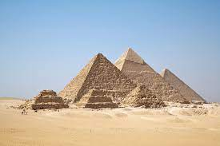

1.Pyramids of Giza
Located just outside of modren day cairo city, the Pyramids of giza are a historical structures contructed from roughly 2550 to 2490 B.C.
2.Eiffel Tower
Located west of the heart of paris(The city of Love) sits the monument Eiffel Tower constructed from 1887 to 1889.
3.The Great wall of China

Located just north of the modren capital of china, Beijing. Continuously built from the 3rd century BC to the 17th century AD.